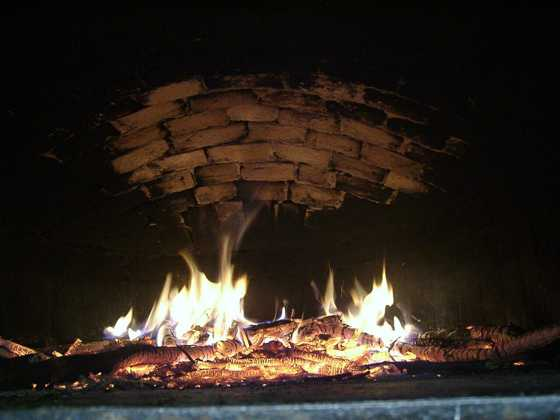
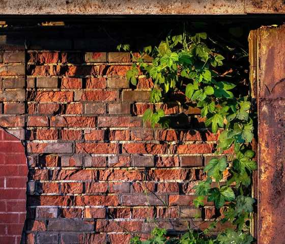

ABOUT
お店のこと
会社員を経て、長年の夢だったパン屋を開いた店主のお店です。2021年1月16日にオープンしました。黒板には「やわらかいパンを中心に焼いています」と書かれていると紹介されています。
- 幕張本郷駅から歩いてすぐの場所にあります。
- コック帽をかぶったぶたのイラストと、れんが・小麦の絵の看板が目印と紹介されています。
- イートインスペースがあると紹介されています。
- 店主の気まぐれで、日替わりパンが並ぶことがあるそうです。
- 完売次第閉店とされた記事もあります。早めの来店がおすすめです。
※上記は開店時などの取材記事に基づく情報です。現在の状況はInstagramなどでご確認ください。店名の由来は確認できていません。





BREAD
パンのご紹介
これまでの紹介記事で挙げられていたパンです。内容や価格は変わることがあります。
価格・最新のラインナップ: 準備中


こぶたの焼き印、3種のジャム。名前の通り、どこか童話の「三匹のこぶた」を思わせる遊び心のあるパンたちです。

VOICE
口コミ(イメージ例)
以下は制作側が作成したイメージ例です。実在のお客様の声ではありません。
イメージ例
やわらかくて食べやすいパンで、子どもも大人も安心して食べられそうです。
イメージ例
こぶたの焼き印の食パンは、見ているだけで楽しくなります。朝の食卓が明るくなりそう。
イメージ例
駅から近いので、帰りに寄れるのがうれしい。気まぐれの日替わりパンも気になります。